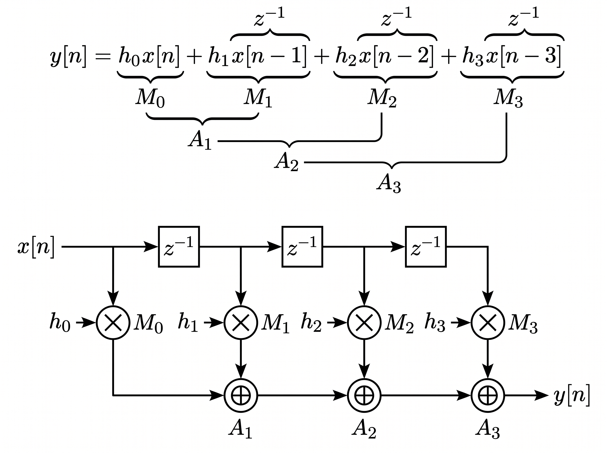

Win: dibujar el DFG en pizarra en ~2 minutos, clasificar cada elemento y cerrar con la frase feed-forward que anticipa los Ej. 2–4. Base: tu README Ej. 1. ⏱ ~15–20 min.
1 · Consigna y entregables (qué te piden exactamente)
Enunciado: dibujar el DFG de un FIR de 4 coeficientes en forma directa, identificando explícitamente nodos (operaciones), aristas (flujo de datos) y registros (z⁻¹). Entregables: ① diagrama DFG; ② identificación explícita de los tres tipos de elementos. Parece trivial —es el ejercicio que más nota regala si lo presentás con método, y el que más penaliza si lo dibujás "de memoria" con un tap cruzado.
2 · Resolución en 4 pasos (tu guion oral, con pizarra)
Paso 1 — Ecuación. Escribo y[n] = h₀x[n]+h₁x[n−1]+h₂x[n−2]+h₃x[n−3] y digo: "todo lo que dibuje sale de acá, término por término". Paso 2 — Línea de retardo. Dibujo x[n] → 3 z⁻¹ en cascada y marco los 4 taps: x[n], x[n−1], x[n−2], x[n−3]. Digo: "4 taps ⇒ 3 retardos; el tap 0 es el presente". Paso 3 — Productos. De cada tap saco una flecha a un círculo Mk con su hk: Mk=x[n−k]·hk. Digo: "los 4 productos son independientes: pueden ir en paralelo". Paso 4 — Cadena de sumas. Encadeno A₁=M₀+M₁, A₂=A₁+M₂, A₃=A₂+M₃=y[n]. Digo: "las sumas sí son secuenciales: cada una necesita la anterior". Cierre. "7 nodos, aristas dirigidas, 3 registros; grafo acíclico feed-forward, listo para schedular (Ej. 2) y pipelinear (Ej. 4)".

Tu DFG final (DFG_v2). Recorré con el dedo de arriba abajo: retardos → productos → sumas → y[n].
3 · Tabla de elementos (la "identificación explícita" que pide la consigna)
Elemento
Cantidad
En tu DFG
Cómo señalarlo al exponer
Nodos (cómputo)
7
M₀…M₃ (×), A₁…A₃ (+)
"Cada círculo transforma: × pesa, + acumula"
Aristas (flujo+dependencia)
—
x→z⁻¹→M, M→A, A→A→y
"Cada flecha ordena: sin ella no sé qué va antes"
Registros z⁻¹ (memoria 1 ciclo)
3
Cascada sobre x[n]
"Cada cuadrado rompe el camino y guarda el pasado"
Detalle que suma puntos: explicá que los z⁻¹ de la línea de retardo son arquitecturales (los pide el algoritmo, retienen x[n−k] entre muestras), distintos de los registros de pipeline que vas a agregar en el Ej. 4 (que retienen parciales dentro de una misma muestra para subir fmax). Misma celda, distinto propósito.
4 · Frases para preguntas del público
"¿Por qué cadena de sumas y no un árbol balanceado?" → Porque la consigna pide la forma directa, que es la ecuación tal cual está escrita: ((M₀+M₁)+M₂)+M₃. Un árbol ((M₀+M₁)+(M₂+M₃)) da el mismo número —la suma es conmutativa— pero es otro DFG: otra profundidad de dependencias, otro scheduling y otro camino crítico. Válido como optimización, inválido como entregable de este ejercicio.
"¿Los 4 productos pueden ir en paralelo, y las sumas por qué no?" → Mirá las aristas: entre M₀…M₃ no hay ninguna flecha que los conecte, así que ninguno espera a otro —paralelismo real. En cambio A₂ necesita a A₁ y A₃ necesita a A₂: cada suma espera a la anterior —serialidad forzada por el grafo. El DFG muestra la respuesta.
"¿Dónde está el camino crítico?" → Todavía no lo calculo formalmente (eso es el Ej. 2), pero ya se lee: la cadena M₀ (o M₁) → A₁ → A₂ → A₃, 4 nodos con dependencias encadenadas. Anticipo que la latencia mínima será 4 ciclos y que M₂ y M₃, al estar "fuera" de esa cadena, tendrán holgura.
"¿Y si sumo en otro orden, tipo M₀+M₂ primero?" → Numéricamente da lo mismo, pero dejás de dibujar la forma directa: tu DFG ya no mapea término a término la ecuación y el corrector te lo marca. Además el orden canónico A₁ = M₀+M₁ pone primero los productos "viejos" (disponibles desde el ciclo 1 junto con todo lo demás en ASAP), que es lo que el Ej. 2 necesita.
"¿Estos 3 registros son los únicos del diseño final?" → No: son los arquitecturales, los que pide el algoritmo (la memoria del filtro). En el Ej. 3 vas a agregar P, acc y y_out para el plegado, y en el Ej. 4 dos registros de pipeline. Misma celda, distinto propósito —y saber distinguirlos es media presentación.
"¿Y el IPB de este filtro?" → No aplica: el IPB se calcula sobre lazos de realimentación y este grafo no tiene ninguno (todo fluye hacia y[n]). El IPB aparece recién con el IIR del Ej. 6, que queda fuera de esta presentación.